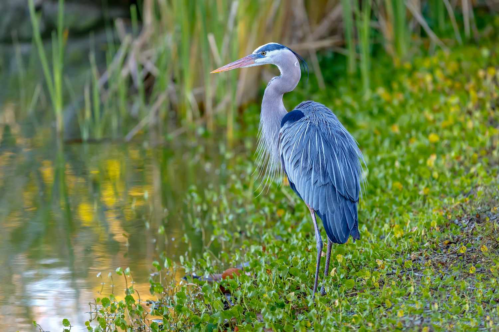

Exploring Wetland Ecology
Marshes
Swamps
Bogs
Fens
Wetlands are some of the most productive and diverse ecosystems on Earth, providing crucial habitats for a wide range of species. This site explores various types of wetlands—marshes, swamps, bogs, and fens—highlighting their ecological roles, unique vegetation, and the species that depend on them.
